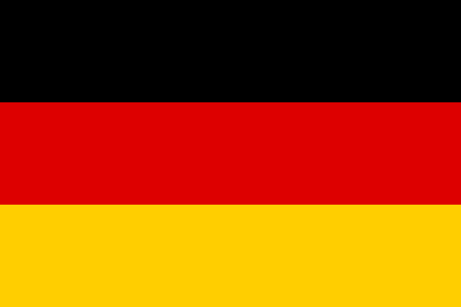

Countries

France, a country in Western Europe, has medieval towns, alpine villages and beaches. Paris, its capital, is famous for its fashion houses, its classical art museums, including the Louvre, and its monuments such as the Eiffel Tower. The country is also renowned for its wines and fine cuisine. The cave paintings in the caves of Lascaux, the Roman theater in Lyon and the immense Palace of Versailles testify to its rich history.

Germany is a country in Western Europe whose landscape consists of forests, rivers, mountain ranges and beaches on the North Sea. Its history dates back more than 2,000 years. With a lively artistic and nightlife, Berlin, its capital, includes the Brandenburg Gate and many sites related to the Second World War. Munich is known for its Oktoberfest and beer bars, including the Hofbräuhaus which dates back to the 16th century. Frankfurt, with its skyscrapers, is home to the European Central Bank.

Japan is an island country located in the Pacific Ocean. It features dense cities, imperial palaces, mountainous national parks, and thousands of temples and shrines. Shinkansen bullet trains connect the main islands of Kyūshū (with the subtropical beaches of Okinawa), Honshū (home to Tokyo and the memorial honoring the victims of the Hiroshima atomic bombing), and Hokkaidō (popular for skiing) . Tokyo, the capital, is famous for its skyscrapers, shops and popular culture.

Ukraine is a vast country in Eastern Europe known for its Orthodox churches, its coasts along the Black Sea and its forested mountains. Its capital, kyiv, is home to Saint Sophia Cathedral, topped with a gold dome and featuring mosaics and 11th-century frescoes. Overlooking the Dnieper, the Lavra of the Caves of kyiv is a vast monastery and place of Christian pilgrimage which contains tombs, relics and Scythian catacombs where mummified Orthodox monks rest.